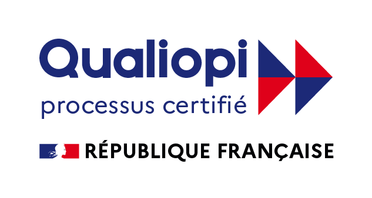

Un organisme de formation certifié Qualiopi
Collectivités locales – Établissements de santé – Habitat social – EPL – Entreprises
BPCE Finances & Territoires est un acteur de référence dans le domaine des financements publics et privés (non bancaires). Forts de notre expérience terrain, nous mettons notre expertise au service des acteurs publics locaux et institutionnels pour soutenir leurs projets d'investissement et de développement.
Notre organisme de formation est né de la volonté de partager notre savoir-faire et nos connaissances pratiques et théoriques. Nos formations sont élaborées et dispensées par des experts spécialisés dans l'analyse, le conseil et le montage dans tout type de financements (publics, privés, nationaux, européens) pour les projets d'investissement portés par des acteurs publics et privés non lucratifs.
Ces modules de formation sont dédiés aux professionnels impliqués dans le montage d'opération et la gestion financière, souhaitant renforcer et actualiser leurs connaissances. Nous proposons nos formations en format distanciel.
BPCE Finances & Territoires est certifié Qualiopi par Pronéo Certification : cliquez-ici pour afficher la certification

La certification qualité a été délivrée au titre de la catégorie d'action suivante : ACTIONS DE FORMATION
Secteur public et privé non lucratif
Mobiliser les aides publiques nationales pour vos projets d’investissement
Mobiliser les aides européennes pour vos projets d’investissement
Mobiliser les Aides & Subventions pour vos projets d’investissement
Financements privés et fonds de dotation
Secteur des entreprises
Comprendre et mobiliser les aides & subventions pour vos projets de croissance
Nos formations en chiffres
*Enquête de satisfaction à laquelle 82 stagiaires ont répondu.
Nos clients ont particulièrement apprécié
La pédagogie des formateurs
La diversité des intervenants en fonction de leurs compétences
Les informations très instructives, le partage de bonnes pratiques et le retour « terrain »
L'accueil et la clarté de la formation
Les intervenants expérimentés, rigoureux et clairs
Les supports détaillés et pratiques
La méthode pédagogique efficace entre présentations et cas pratiques
Formation complète de très haut niveau, comme ses intervenants, à la fois experts et praticiens expérimentés. Supports détaillés et pratiques pour leur mise en application directe. Je recommande !
La qualité d'écoute, les réponses claires, la maîtrise du temps de formation
Le contenu complet et structuré, l'approche interactive, l'expertise des intervenants
Les exercices, poser des questions libres, les clés pour bien monter son dossier
Les échanges constructifs, les quiz en fin de période et le format à distance
Souhaitez-vous en savoir plus ?
Pour obtenir les informations sur les tarifs ainsi que sur les modalités et les délais d'accès à nos sessions de formation, nous vous invitons à renseigner le formulaire de contact en nous précisant l'intitulé et la date de la formation qui ont retenu votre intérêt.
Pour répondre aux attentes et aux besoins spécifiques des stagiaires ultramarins, nous proposons uniquement des formations en INTRA dédiées aux territoires d'Outre-mer. Délais d'inscription : nous consulter.
Si vous souhaitez nous faire part d'une éventuelle reconnaissance de handicap ou formuler une demande d'aménagements liée à un handicap, n'hésitez pas à nous l'indiquer à l'adresse formation@finances-territoires.fr ou en prenant contact au 04 69 96 61 60 afin que nous puissions étudier ensemble la faisabilité de votre projet de formation.
Formez vos équipes aux aides & subventions
Précisez-nous l'intitulé et la date de la formation qui vous intéressent : nous revenons vers vous avec les tarifs et les modalités d'accès.